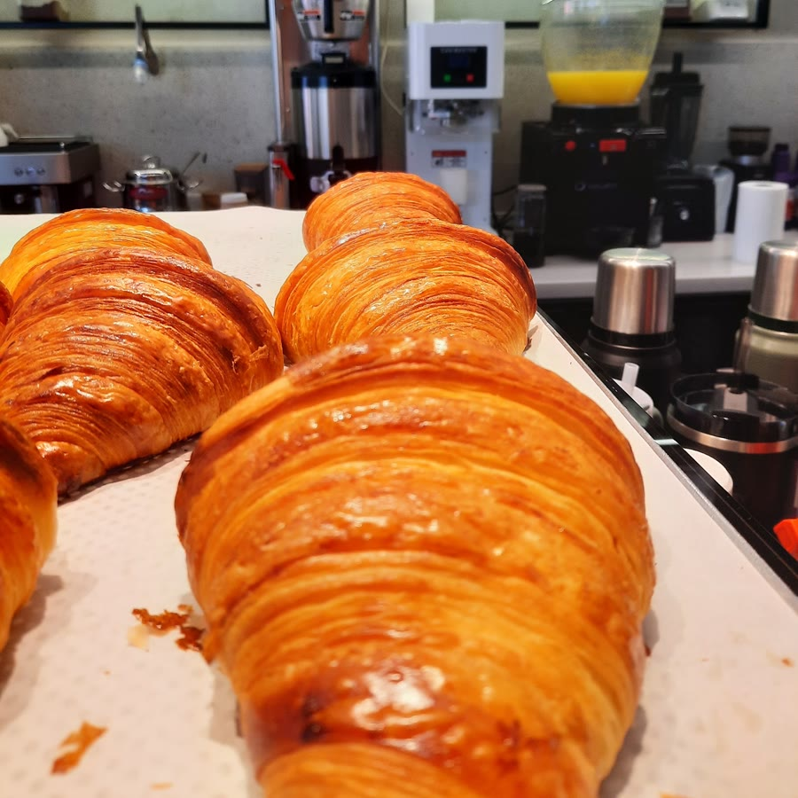

Kruvasanı kahveye batırmanın tam yeri.
Kruvasanlarımız, tatlılarımız ve sandviçlerimiz kendi mutfağımızdan, her gün taze. Alya Residence’ta, sabahtan gece yarısına.
Her gün 07.30–01.00Alya Residence, BeylikdüzüGoogle’da 4,6
Vitrinimizde bu hafta
Hepsi kendi üretimimiz. Meyve görünümlü tatlılarımızı Fransız pastacı Cedric Grolet’nin tarzından ilham alarak yapıyoruz.


Yana kaydırın. Dubai Ball’u da sorun: dışı tel tel çıtır, içi yumuşacık.


07.30Kapıyı açtığımızda tezgâhta
Her sabah taze kruvasan
Kahvenin en iyi arkadaşı. Sandviçlerimizi de kendi mutfağımızda hazırlıyoruz.
- Kruvasan çeşitleriSade ya da dolgulu, günlük taze
- Avokado ve yumurtalıKruvasan sandviç
- Kapya biber ve köz patlıcanlıKruvasan sandviç
Kahveni al, istediğin kadar otur
Kitaplığın önünde çalışma tezgâhı, uzun masalar ve teras. Dizüstü bilgisayarınla gelmek için de uygun.


Misafirlerimiz ne diyor?
4,65 üzerinden
Google’da 535 yorum
Beylikdüzü’nde en lezzetli ve taze tatlıları yiyebileceğiniz bir kafe. Temizliğe çok dikkat eden bir yönetim. Sık sık gittiğim, güzel, nezih bir mekân.
Barista hanımefendinin önerisiyle Spanish latte denedim ve çok beğendim. Güler yüzleri ve lezzetleriyle kesinlikle tekrar geleceğim.
Sakin, nezih ve kahveleri güzel.

Bizi bulun
- Adres
- Alya Residence, Adnan Kahveci Mah. Büyükdere Cad. No: 2/8, Beylikdüzü
- Açık
- Her gün 07.30–01.00
- Telefon
- 0850 305 21 11